Improved Type Inference for Generic Instance Creation (Diamond)
|
| Content assist inserts diamond |
Where possible, content assist for constructor invocations now inserts a diamond instead of explicit type arguments.
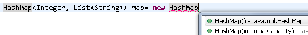
Result:
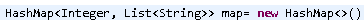
|
| Detection of redundant type arguments |
The compiler can now detect redundant specification of type arguments, which you can remove via the Remove type arguments quick fix.

This option is disabled by default but can be enabled on the Java > Compiler > Errors/Warnings preference page:
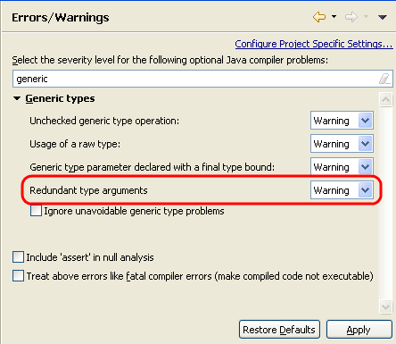
|
| New Insert inferred type arguments quick assist |
You can insert inferred type arguments of a diamond via a quick assist.

Hint: This also works as a quick fix in 1.5 and 1.6 code, where the diamond is a syntax error.
|
Multi-catch
|
| New Surround with try/multi-catch quick fix |
The new action Source > Surround With > Try/multi-catch Block allows you to surround selected statements with a try/multi-catch block.
This is also available as Surround with try/multi-catch quick fix in case there are multiple uncaught exceptions.
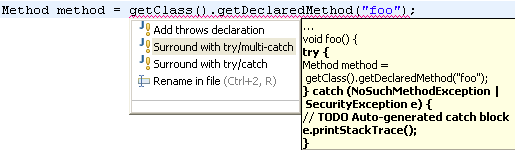
|
| New Add exceptions to existing catch clause quick fix |
The new Add exceptions to existing catch clause quick fix allows you to add uncaught exceptions to an existing catch clause.
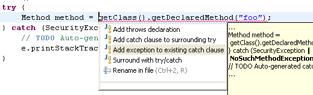
|
| New Use separate catch blocks quick assist |
The new Use separate catch blocks quick assist allows you to replace a multi-catch clause with individual catch blocks,
one for each exception in the multi-catch clause.

|
| New Move exceptions to separate catch block quick assist |
The new Move exceptions to separate catch block quick assist allows you to pick out one or more selected exceptions from a multi-catch clause.
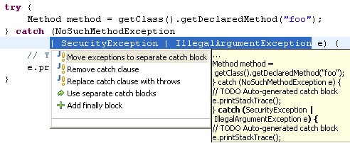
|
| New Combine catch blocks quick assist |
The new Combine catch blocks quick assist allows you to combine separate catch blocks into a single multi-catch block.
The quick assist is offered only when bodies of all the catch blocks are same.
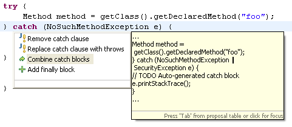
|
| New Remove exception quick fix |
The compiler gives an error if an exception in a multi-catch clause is already caught by an alternative exception.
The new Remove exception quick fix allows you to remove this exception.
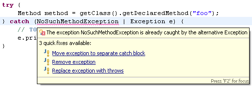
|
| Mark Occurrences |
Mark Occurrences has been updated to understand the multi-catch syntax.
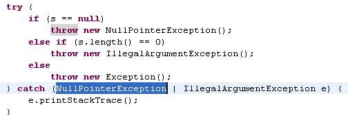
|
| Formatter |
There are new Line Wrapping options in the formatter for the multi-catch syntax.
These can be configured on Java > Code Style > Formatter preference page under
Line Wrapping > Statements > 'multi-catch'.
|
try-with-resources statement
|
| Detection of unhandled exceptions thrown by automatic close() |
The compiler detects unhandled exceptions thrown by automatic close() invocation on a resource.
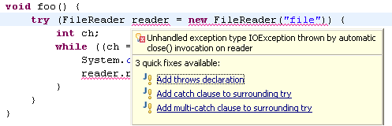
|
| Mark Occurrences |
Mark Occurrences has been updated to understand the try-with-resources syntax.
The closing '}' of a try-with-resources statement is marked as a method exit point if the implicit close()
invocation throws an exception. The corresponding resource variable is also highlighted.

|
| Formatter |
There are new Line Wrapping and White Space options in the formatter for the try-with-resources syntax.
These can be configured on Java > Code Style > Formatter preference page under
Line Wrapping > Statements > 'try-with-resources' and White Space > Control Statements > 'try-with-resources'.
|
Simplified Varargs Method Invocation
|
| New Add @SafeVarargs quick fix |
The new Add @SafeVarargs quick fix is offered for potential heap pollution warnings on method declarations.
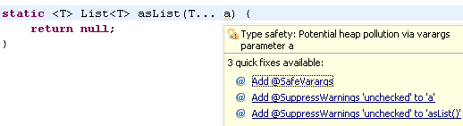
The quick fix is also offered from call sites.
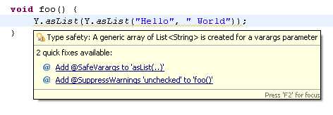
|
| New Remove @SafeVarargs quick fix |
The new Remove @SafeVarargs quick fix is offered for incorrect usage of @SafeVarargs annotation.

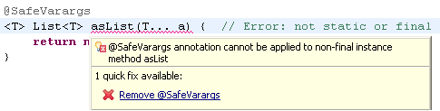
|
Strings in switch
|
| Convert 'switch' to 'if-else' quick assist |
The Convert 'switch' to 'if-else' quick assist has been updated for strings in switch.
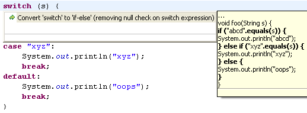
Note that the quick assist avoids a NullPointerException in the resultant code.
|
Polymorphic Methods
|
| Polymorphic method signature in Javadoc hover |
Javadoc hovers for references to
polymorphic methods
show the actually used method signature.
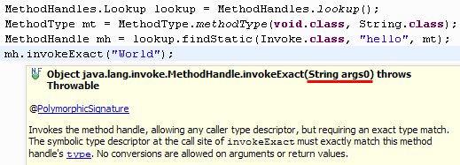
|
|